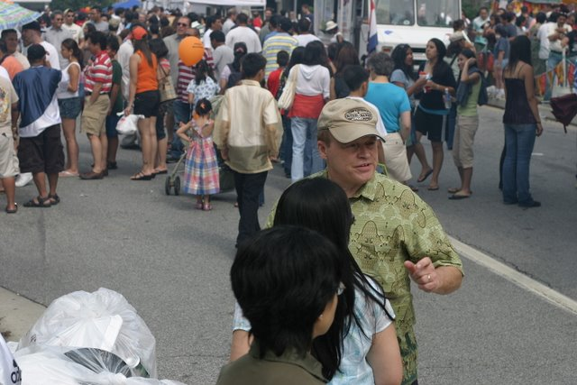
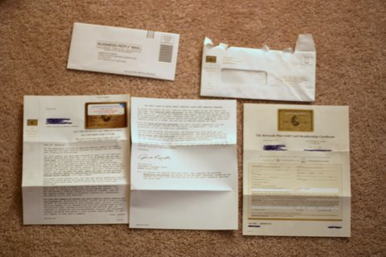
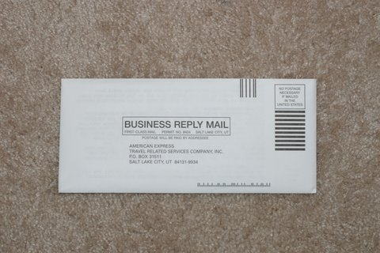

Apple announced their Mac-only web browser, Safari, will now be available on the Windows side in a new public beta. Now in addition to the included Internet Explorer, open-source darling Firefox, cool-to-be-the-underdog Opera, blast from the past Netscape among many other browsers we now have the choice of Safari.
Who would choose to use Safari?
Lots of people due to its security over Internet Explorer and less-bloated memory footprint compared to Firefox. Safari is a good middle-of-the-road, basic browser for those merely interested in surfing the web and not into all of the technical nuts and bolts of the modern browser.
Sure, lots of Mac geeks who are forced to use Windows boxes will switch, but what about the average Joe?
I am positive they will come in contact with Safari sooner than you think. After this beta phase fades away and the official Safari 3 ships, Apple will bundle it with iTunes and Quicktime making millions of unsuspecting music patrons download and install the browser without them even knowing they had a choice. But why should iTunes fans care if they download some more Apple hub-jub? It is Apple we are talking about; maker of fine, easy to use software and stylish high-end hardware.
Apple won’t insist Safari be the default browser after merely installing it, oh no that would be too aggressive and pushy. Instead, iTunes will merely require it for some new fan dangled feature in the iTunes music store. Itunes could easily detect if you have Safari installed and launch special iTunes web content in the Apple browser of choice with a simple, harmless dialog asking the audience “Would you like to make Safari the default browser?” Any browser out there today will pop up this question and generally it is an accepted practice so long as the developers give the user some control like “Don’t ask again” or “Remember my choice”. Bam! Problem solved with no harm done and Apple’s browser market share will slowly begin to creep up. After all if it worked for Quicktime and iTunes why couldn’t it work for Safari?
Instead of the usual slog on the exercise bike I decided to go for a quick jog around my neighborhood. On the way back I stopped by the grocery store to get some breakfast cereals for the rest of the week as well as to cool down from my workout. Here is the route I took.
According to Gmaps Pedometer I covered 2.3077 miles (I didn’t run the whole time) and burned 364.4 calories. I’m excited that I finally got past the 210 pound mark. I hope to keep it up tomorrow.
Unlike the rain-soaked DC Filipino Festival that took place last weekend, the Towson Filipino Festival was bright and sunny. Because of the weather the turnout was far greater than the DC one which provided a lot of great opportunities for photos.
The youth even get in on performing.

Street scene from the festival.
Such a large turn out.
While still a small festival, the Towson Filipino Festival was a lot of fun. We were there for only a short amount of time but look forward to going again next year.
All I’ll say is Ocean’s 13 is better than Ocean’s 12 but not as good as the more recent Ocean’s 11. Same city, same idea, pretty much the same cast. If you saw the first two then you will probably want to see the third one too!
I love how slick Danny Ocean and Rusty Ryan are both in dress and in attitude. If I could be anyone I would be one of them.
I must have spoken too soon as Internet video giant YouTube has released their embeddable flash video player. Try it below…
New features include
The ability to rate the current video right in the player.
Skip to the next related video by hitting the arrows on the left or right.
View thumbnails of other related videos by hovering your mouse near the bottom of the player.
Get the embed code and url by clicking the ‘menu’ button or waiting for the clip to finish.
All of these features are available in the embedded player and not just on the YouTube page.
If you were thinking that all you had to do was just make your video available to an online audience, think again! Now you have to make it as easy as possible to keep them entertained giving them more control over their viewing experience.
Last night Break.com launched a new video player with some unique features. The video of the player in action can be seen below.
Some of the new things are…
Clicking on the bottom right corner allows you to resize the player as a video is playing.
You can also elect to center the player in the middle of your browser, make it full-screen, or bring it back to normal size while a video is playing.
Clicking on the picture and dragging it right or left while the mouse is still pressed down grabs the video and fast-forwards or rewinds it. (Very cool!)
Controls for brightness, contrast, saturation, and smoothing can bump up and overlay the player.
Slo-motion
Keyboard shortcuts — A for fullscreen, S for slow-mo, V for preferences, up and down for volume, right and left for fast-forward and rewind.
If selected, a guide overlays the entire screen with more from this user, top-rated, most-viewed, and related video scrolling through.
Of course to play with the new features you will have to view a video on Break.com’s pages not an embedded version like above.
No bike tonight. I thought I would give my legs a rest and instead I worked my upper body by playing Wii Boxing for 25 minutes. Boy did I work out a sweat as my virtual opponents were challenging. The sweating was good because today I had a medium bag of buttered popcorn at lunch. I won’t get the chance to exercise until next Monday so hopefully I can get a little outdoor activity this weekend.
Browsing the headlines at CNN today I noticed a link to preview their new beta look. Here is a look of the current design followed by the new beta look…
As you can see, CNN is trying to better organize their information as well as web 2.0-ifying their look with rounded corners and brighter colors. Under the shiny hood they have ditched all table-based layout elements (<table>, <tr>, <td>) and have instead gone with a 100% standards-based layout (<div>, <p>, <ul>, <li>). For the laymen, CNN has made their layout lighter in code and easier to maintain.
The bad news is CNN is relying on a lot more JavaScript files; 15 total scripts on the new homepage compared to 9 on the old. For a comparison, other news sites like MSNBC.com uses 12 and USNews.com uses 10. The more scripts a page needs to call the longer the load time as the browser has to download the complete JS file before the page continues to load. Below is a table outlining some other technical stats between the previously mentioned news sites.
With the technical bits aside, the new design greatly enhances usability, especially in the article pages. Thanks to AJAX a reader can interact with photos and video on the page without being forced to reload or pop-up a new window. This makes things like their in-line photo displays a joy to use. But photos are not the only thing that have been made easier to use; CNN’s new YouTube-inspired Flash video player has its own little tab that comes into view when needed and tucks neatly away when not in use.
Flash video players are universal and can be used on any system with the Flash plugin. This is a big step up from the former Windows Media only video option that came in a pop up player on the old CNN. Not only is video more user friendly but it is also bigger making it a much more enjoyable experience.
Pros
More organized homepage
Better user experience
No refreshes for multimedia content
Richer video player
Cons
Lots of JavaScript
Semi-functional site with JavaScript turned off
Conclusion
The new look provides several necessary improvements as CNN looks to focus more on multimedia driven content in the future. The changes that I have seen today are a big step forward and I look forward to checking back as CNN remains my top spot for national news. I look forward to seeing whatever else they may have in store.
Today was not my day for riding the exercise bike. For some reason I couldn’t keep going once I started. Usually I go for 10 minutes, take a 1 minute break to walk around and get a small glass of water, and then hop back on for another 5 minutes. But today I just couldn’t do that. I must have taken 4-mini breaks as my thighs would start to throb. By the end of my 20 alloted minutes I was dripping sweat and ready for a shower. My legs were burning so I guess it wasn’t a complete loss. Maybe tomorrow I will try and get some Wii Sports in.
It is bad enough when you receive e-mail you didn’t ask for, it is even worse when companies are willing to pay the postage in order for you to get their solicitations. I was sick of getting the same junk day after day, so I came up with this simple 4 step plan…

Make sure it is junk mail. You will have to open the envelope in order to continue. Besides you would really feel like an ass if you overlooked the obvious.
Layout all of the mail and cross-out any personal information. Hopefully you would do this anyway if you were just going to toss it. If the company really wanted to get back to you I’m sure they could find your address in their huge database.
Look for the pre-paid envelope and stuff as much of their junk back into it. Bonus points for getting the envelope they sent all this crap in stuffed in their. Let them deal with their trash on their dime.
Put it back in the mail and send it to back to them!

If you have a bunch of junk mail on your hands then mix ‘n match! I’m sure they would love to see the materials their competitors are sending around. Hopefully these companies will realize it is too costly to keep sending junk mail to you and will drop you from their list.
For a quicker route to reduce your junk mail load you might consider visiting these sites: